dx_f <- D( f(x) ~ x) # First deriv. of f()
dxx_f <- D(dx_f(x) ~ x) # Second deriv. of f()21 Concavity and curvature
It is an easy visual task to discern the slope of a line segment. A glance shows whether the slope at that point is positive or negative. Comparing the slopes at two locales is also an automatic visual task: most people have little difficulty saying which slope is steeper. One consequence of this visual ability: it is easy to recognize whether a line that touches the graph at a point is tangent to the graph.
There are other aspects of functions, introduced in Section 6.2, that are also readily discerned from a glance at the function graph.
- Concavity: We can tell within each locale whether the function is concave down, concave up, or not concave.
- Curvature: Generalizing the tangent line capability a bit, we can do a pretty good job of eyeballing the tangent circle or recognizing whether any given circle has too large or too small a radius.
- Smoothness: We can often distinguish smooth-looking functions from non-smooth ones. However, the trained eye can discern some kinds of mathematical smoothness but not others.
21.1 Quantifying concavity and curvature
It often happens in building models that the modeler (you!) knows something about the concavity or the curvature of a function. For example, concavity is essential in classical economics; the curve for supply as a function of price is concave down while the curve for demand as a function of price is concave up. For a train, car, or plane, sideways forces depend on the curvature of the track, road, or trajectory. Road designers need to calculate the curvature to know if the road is safe at the indicated speed.
It turns out that quantifying these properties of functions or shapes is naturally done by calculating derivatives.
Remember that \(f()\) is just a pronoun so that we can refer to a particular function without naming it. Likewise with \(g()\), \(h()\), etc.
We will frame the calculations in terms of a function \(f(x)\). Depending on the setting, \(x\) might be the price of a product and \(f(x)\) the demand for that product. Alternatively, the graph of \(f(x)\) might represent the path of a road drawn in \((x,y)\) coordinates or the reach of a robot arm as a function of time.
21.2 Concavity
Recall that to find the slope of a function \(f(x)\) at any input \(x\), you compute the derivative of that function, which we’ve been writing \(\partial_x\,f(x)\). Plug in some value for the input \(x\) and the output of \(\partial_x\, f(x)\) will be the slope of \(f(x)\) at that input. (Chapter 20 introduced some techniques for computing the derivative of any given function.)
Now we want to show how differentiation can quantify the concavity of a function. First, remember that when we speak of the “derivative” of a function, we mean the first derivative of the function. That full name naturally suggests that there will be a second derivative, a third derivative, and higher-order derivatives.
Figure 21.1 shows a simple function that is concave down.
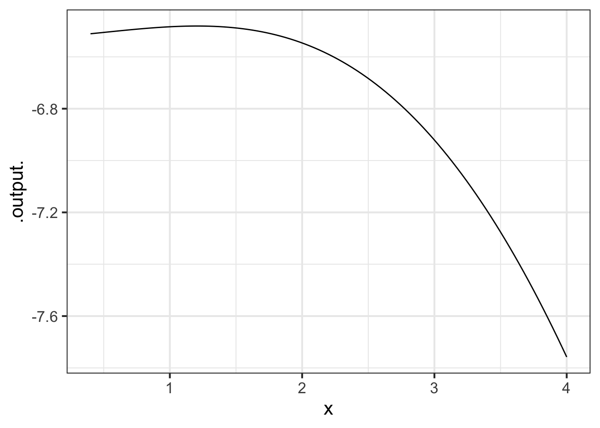
Notice that the concavity is not about the slope. The curve in Figure 21.1 is concave down everywhere in the domain \(0 \leq x \leq 4\), but the slope is positive for \(0 \leq x \leq 1\) and negative for larger \(x\). Slope and concavity are two different aspects of a function.
As introduced in Chapter ?sec-fun-describing, the concavity of a function describes not the slope but the change in the slope. Figure 21.2 adds some annotations on top of the graph in Figure 21.1. In the subdomain marked A, the function slope is positive, while in the subdomain B, the function slope is negative. This transition from the slope at A to the slope at B corresponds to the concavity of the function between A and B.
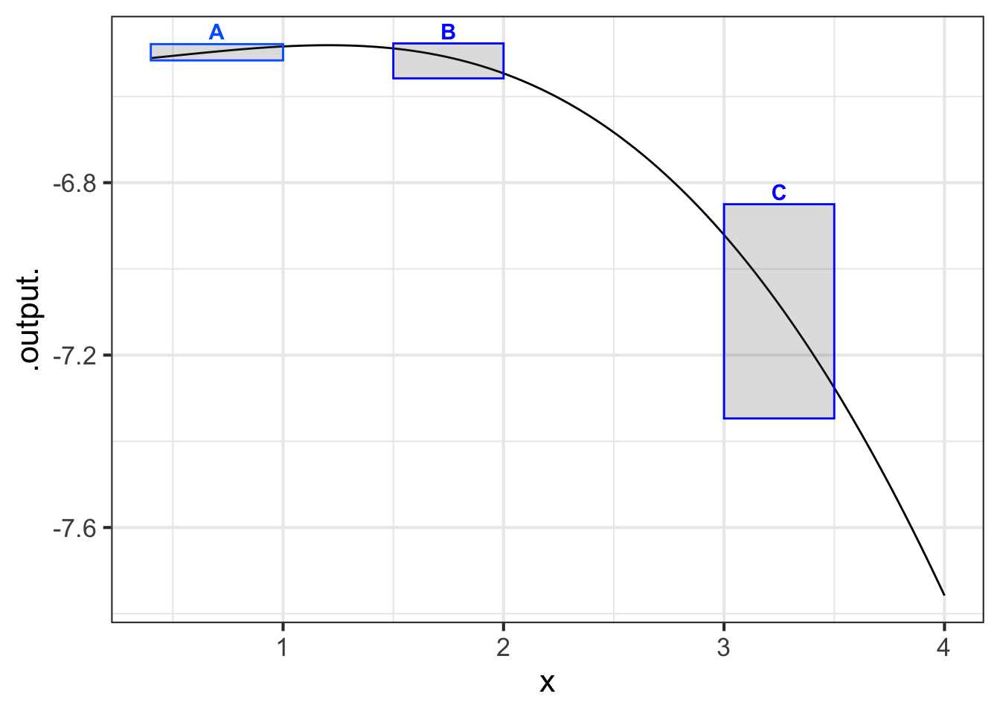
Similarly, the function’s concavity in the interval B to C reflects the transition in the instantaneous slope at B to the different instantaneous slope at C.
Let’s look at this using symbolic notation. Keep in mind that the function graphed is \(f(x)\) while the slope is the function \(\partial_x\,f(x)\). We’ve seen that the concavity is indicated by the change in slope of \(f()\), that is, the change in \(\partial_x\, f(x)\). We will go back to our standard way of describing the rate of change near an input \(x\):
\[\text{concavity.of.f}(x) \equiv\ \text{rate of change in}\ \partial_x\, f(x) = \partial_x [\partial_x f(x)] \\ \\ = \lim_{h\rightarrow 0}\frac{\partial_x f(x+h) - \partial_x f(x)}{h}\] We are defining the concavity of a function \(f()\) at any input \(x\) to be \(\partial_x [\partial_x f(x)]\). We create the concavity_of_f(x) function by applying differentiation twice to the function \(f()\).
Such a double differentiation of a function \(f(x)\) is called the second derivative of \(f(x)\). The second derivative is so important in applications that it has its own compact notation: \[\text{second derivative of}\ f()\ \text{is written}\ \partial_{xx} f(x)\] Look carefully to see the difference between the first derivative \(\partial_x f(x)\) and the second derivative \(\partial_{xx} f(x)\): it is all in the double subscript \(_{xx}\).
Computing the second derivative is merely a matter of computing the first derivative \(\partial_x f(x)\) and then computing the (first) derivative of \(\partial_x f(x)\). In R this process looks like:
A notation shortcut for the two-step process above: double up on the x on the right-hand side of the tilde: dxx_f <- D(f(x) ~ x & x)
21.3 Curvature
As you see from Section 21.2, it is easy to quantify the concavity of a function \(f(x)\): just evaluate the second derivative \(\partial_{xx} f(x)\). However, it turns out that people cannot do a good job of estimating the quantitative value of concavity by eye.
To illustrate, consider the square function, \(f(x) \equiv x^2\). (See Figure 21.3.)
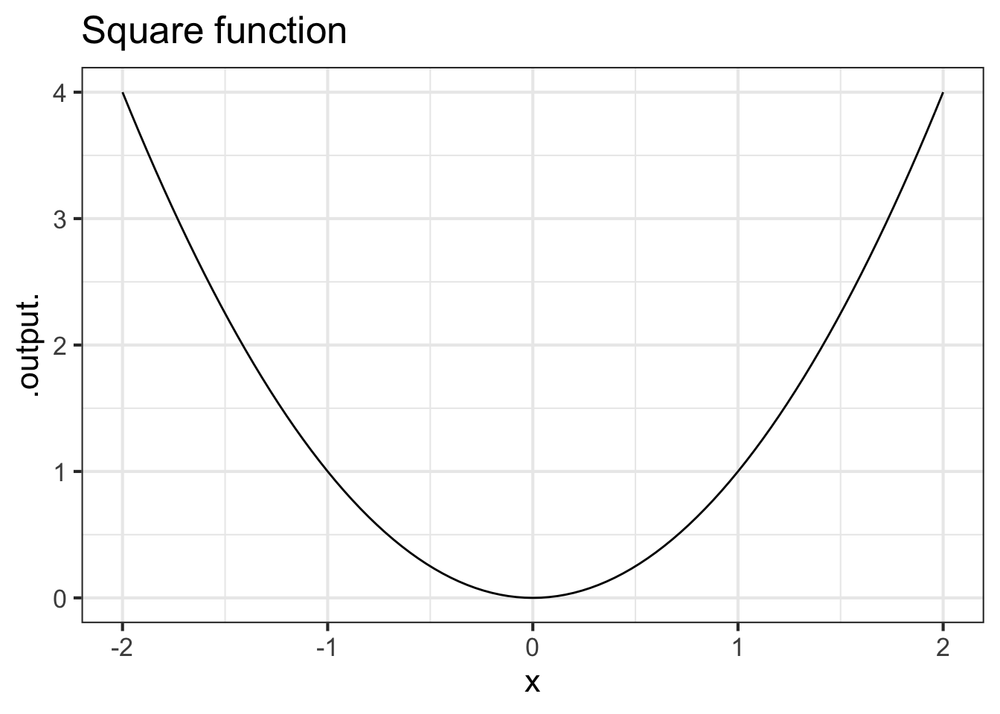
The square function is concave up. Now a test: Looking at the graph of the square function, where is the concavity the largest? Don’t read on until you’ve pointed where you think the concavity is largest.
With the answer to the test question in mind, we can calculate the concavity of the square function using derivatives.
\[f(x) \equiv x^2\ \text{ so }\ \partial_x f(x) = 2 x\ \text{ and therefore }\ \partial_{xx} f(x) = 2\]
The second derivative of \(f(x)\) is positive, as expected for a function that is concave up. Surprisingly, however, the second derivative is constant.
The concavity-related property that the human eye reads from the function graph is not the concavity itself but the curvature of the function. The curvature of \(f(x)\) at \(x_0\) is defined to be the radius of the circle tangent to the function at \(x_0\).
Figure 21.4 illustrates the changing curvature of \(f(x) \equiv x^2\) by inscribing tangent circles at several points on the function graph, marked with dots. That the function’s thin black line goes right down the middle of the broader lines used to draw the circles shows the tangency of the circle to the function graph.
## Warning: Using `size` aesthetic for lines was deprecated in ggplot2 3.4.0.
## ℹ Please use `linewidth` instead.
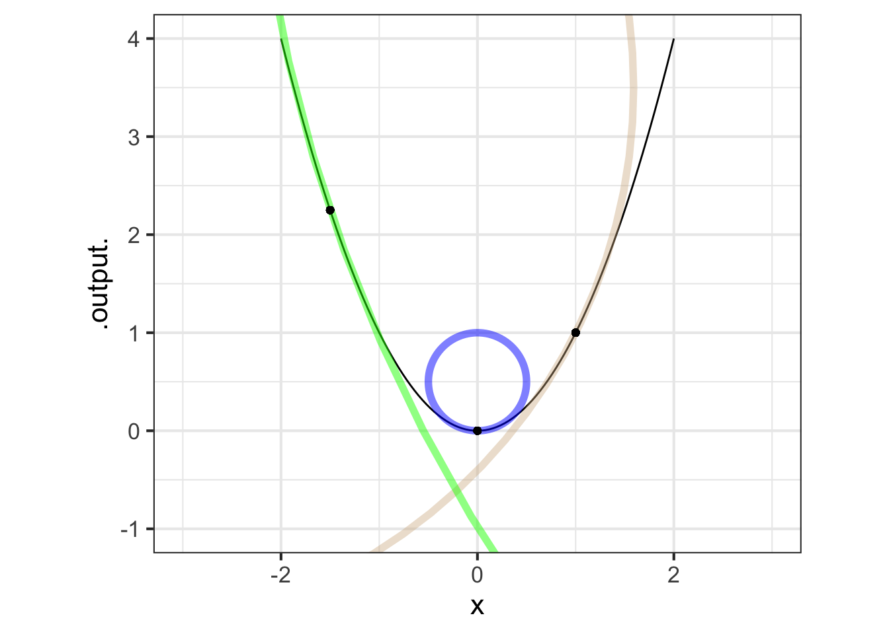
Black dots along the graph at the points indicate where the function graph is tangent to the inscribed circle. The visual sign of tangency is that the function graph goes right down the circle’s center.
The inscribed circle at \(x=0\) is tightest, the circle at \(x=1\) larger and the radius of the circle at \(x=-1.5\) is the largest of all. Whereas the concavity is the same at all points on the graph, the visual impression that the function is most highly curved near \(x=0\) is better captured by the radius of the inscribed circle. The radius of the inscribed circle at any point is the reciprocal of a quantity \({\cal K}\) called the curvature.
The curvature \({\cal K}\) of a function \(f(x)\) depends on both the first and second derivative. The formula for curvature \(K\) is somewhat off-putting; you are not expected to memorize it. But you can see where \(\partial x f()\) and \(\partial_{xx}f()\) come into play.
\[{\cal K}_f \equiv \frac{\left|\partial_{xx} f(x)\right|}{\ \ \ \ \left|1 + \left[\strut\partial_x f(x)\right]^2\right|^{3/2}}\]
Mathematically, the curvature \(\cal K\) corresponds to the reciprocal of the radius of the tangent circle. When the tangent circle is tight, \(\cal K\) is large. When radius of the tangent circle is large, that is, when the function is very close to approximating a straight line, \(\cal K\) is very small.
21.4 Exercises
Exercise 21.01
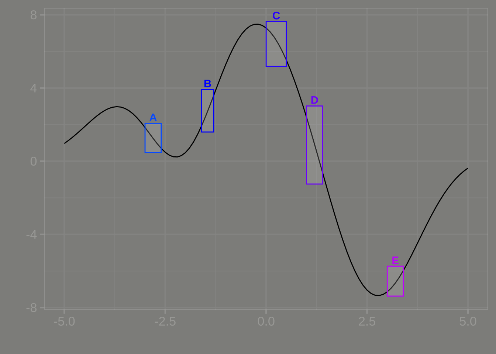
**Part A** Glance at the graph. In which boxes is the slope negative? A, B, C B, C, D A, C, D
Exercise 21.02
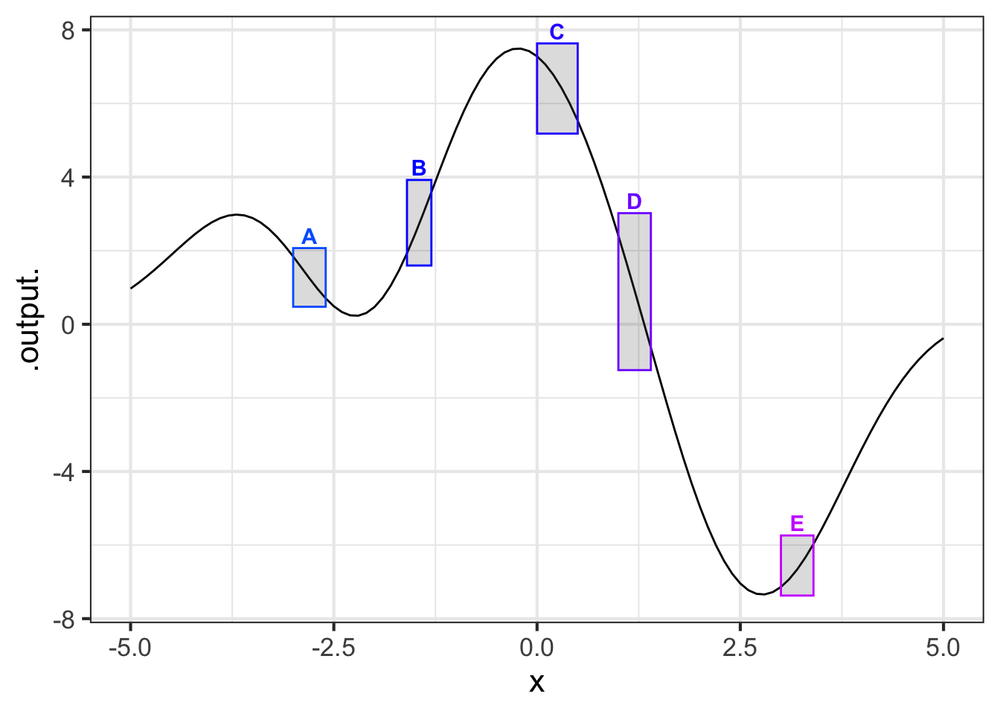
**Part A** Consider the slope of the function in the domains marked by the boxes. What is the order of boxes from least steep to steepest? A, B, C C, A, B A, C, B none of these
Exercise 21.03
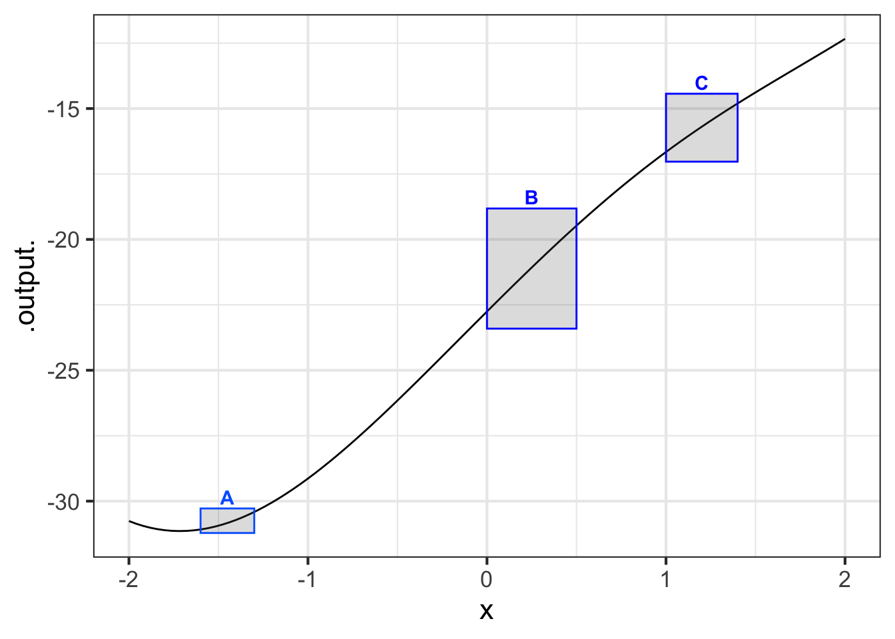
**Part A** Which of the line segments is tangent to the curve at the point marked with a dot? A B C all of them none of them
Exercise 21.04
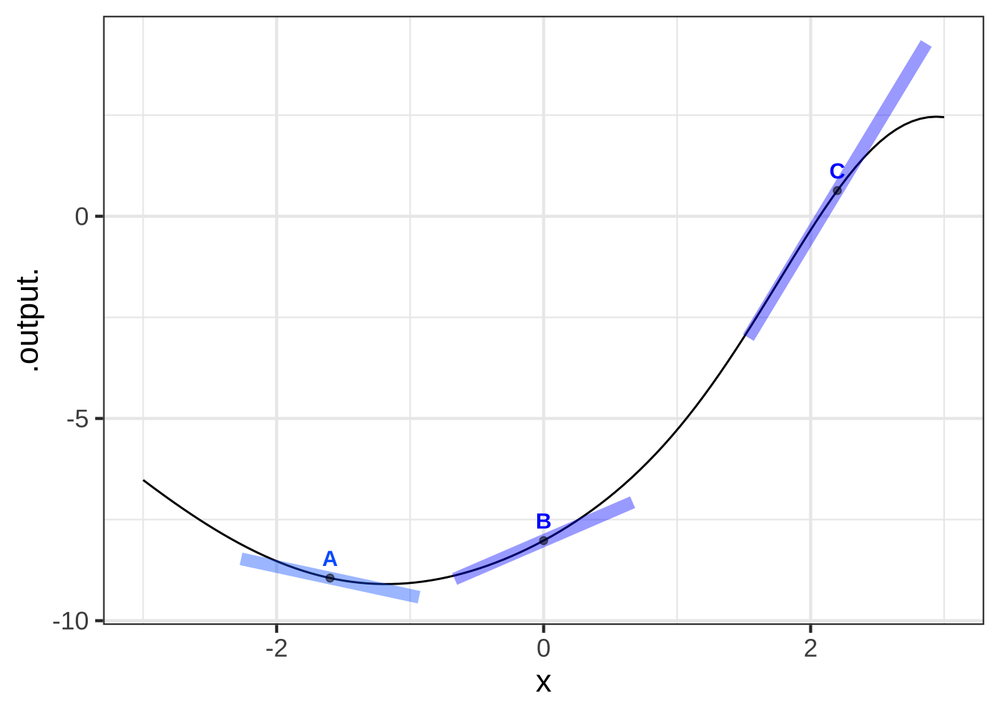
**Part A** Which of the line segments is tangent to the curve at the point marked with a dot? A B C all of them none of them
Exercise 21.05
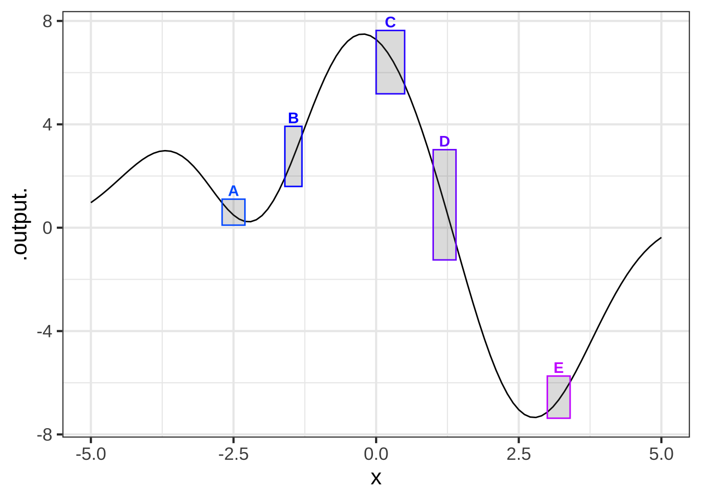
**Part A** In which of the boxes is the function concave up? A and E B and D C and D
Exercise 21.06
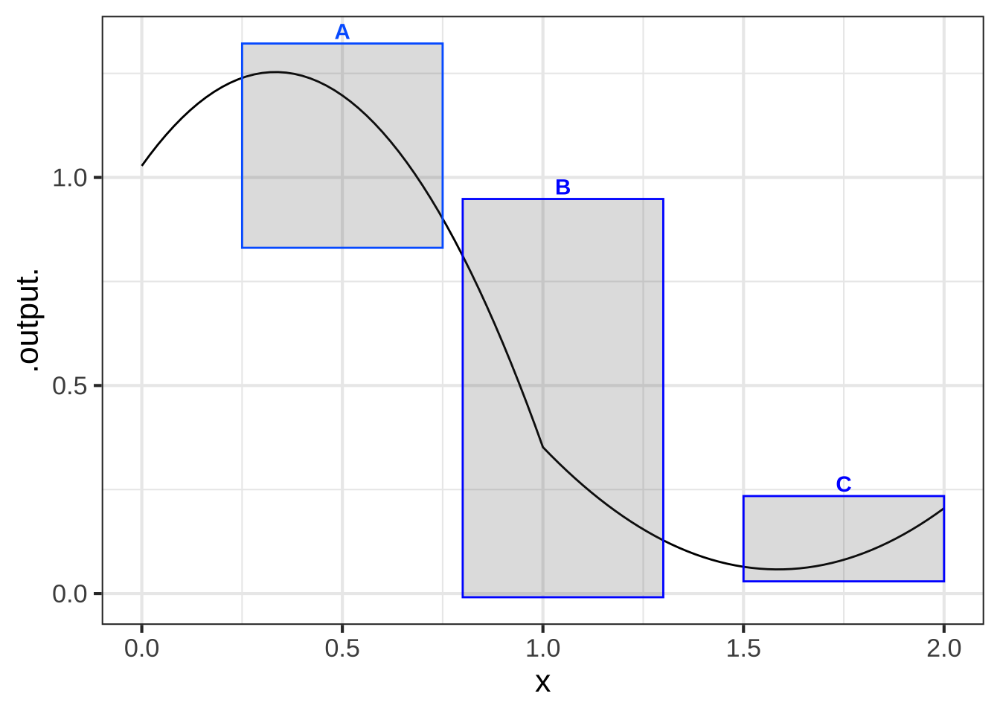
**Part A** In which boxes is the function smooth? A and B B and C A and C none of them all of them
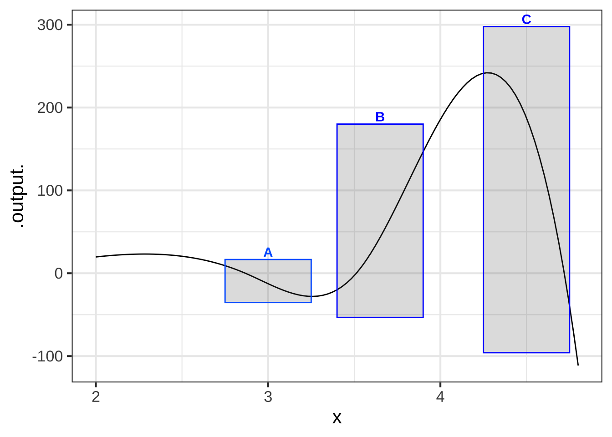
**Part B** In which boxes is the function smooth? A and B B and C A and C none of them all of them
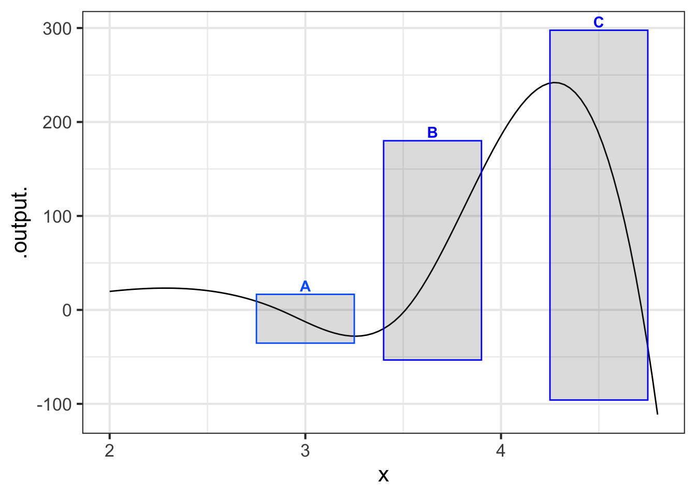
**Part C** In which boxes is the function smooth? A B neither of them both of them
Exercise 21.07
We introduced concavity graphically and used the terms “concave up” and “concave down.” Now we can compute the concavity quantitatively using the second derivative.
In a sandbox, create this function and plot it. (Note: rfun() generates random functions in the same way you might by moving a pencil smoothly on a piece of paper. The seed = 8427 effectively chooses which one of infinitely many functions is being generated. Different seeds give different functions. )
f <- rfun( ~ z, seed = 8427)
slice_plot(f(x) ~ x, bounds(x=c(-5,5)))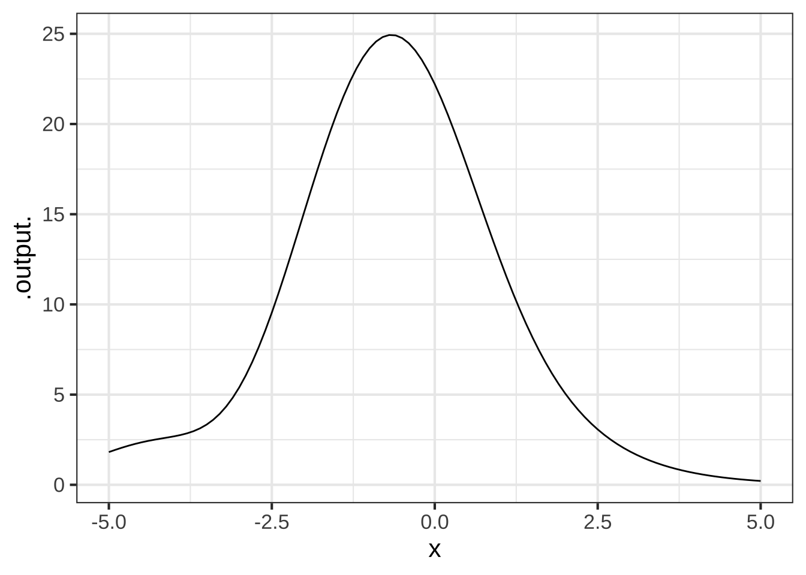
You can see that in the region near \(x = -1\) the function is concave down. While near \(x=2.5\) the function is concave up.
In your sandbox, compute the second derivative of \(f(x)\) and evaluate it at \(x=-1\) and \(x=2.5\).
dxx_f <- D(f(x) ~ x & x)
dxx_f(-1)
dxx_f(2.5)Using these results, and perhaps experimenting a little with different values of \(x\), you should be able to answer this question:
**Part A** Which of these is a correct statement of "concave up" in terms of the value of $\partial_{xx} f(x)$? - A function is concave-up at input \(x_0\) when \(\partial_{xx} f(x_0) > 0\)
- A function is concave-up at input \(x_0\) when \(\partial_{xx} f(x_0) < 0\)
- A function is concave-up at input \(x_0\) when \(\partial_{xx} f(x_0) < 0\) and \(\partial_x f(x_0) < 0\)
- A function is concave-up at input \(x_0\) when \(\partial_{xx} f(x_0) > 0\) and \(\partial_x f(x_0) > 0\)
Recall that an inflection point is a value for the input \(x\) at which \(f(x)\) changes from concave up to concave down, or vice versa. Add a statement to your sandbox to graph \(\partial_{xx} f(x)\).
**Part B** From reading the graph of $\partial_{xx} f(x)$, say which of these is nearest to an inflection point for $f(x)$. \(x = 0.0\) \(x = -4.0\) \(x = 2.5\) \(x = -3\)
**Part C** How many inflection points are there for $f(x)$ in the domain $-5 \leq x \leq 5$? 1 2 3 4 5
Exercise 21.08
The graph of the function \(g(x) \equiv \sqrt{\strut R^2 - x^2}\) has the shape of a semi-circle of radius \(R\), e.g.
g <- makeFun(sqrt(R^2 - x^2) ~ x, R=2)
slice_plot(g(x) ~ x, bounds(x=-2:2), npts=300)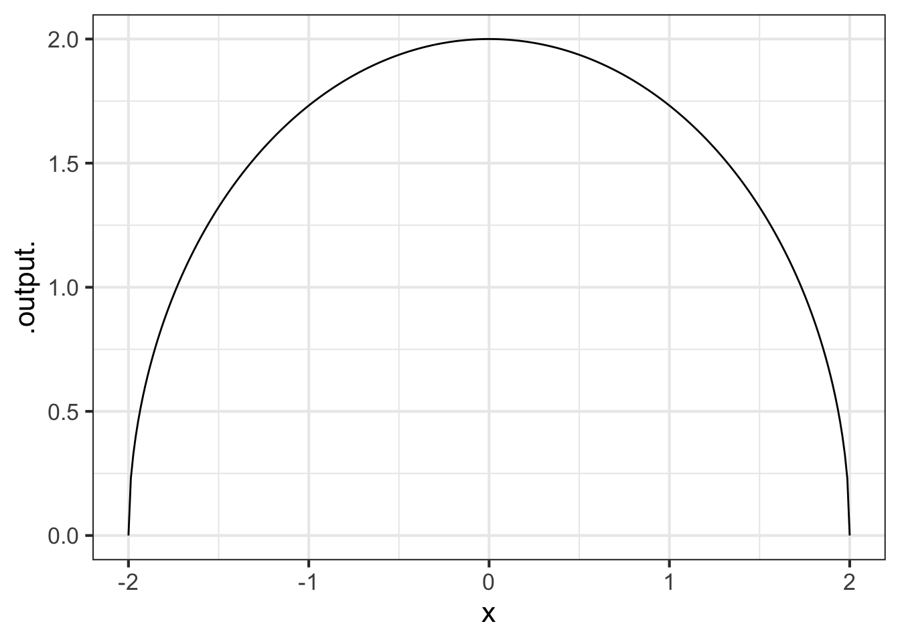
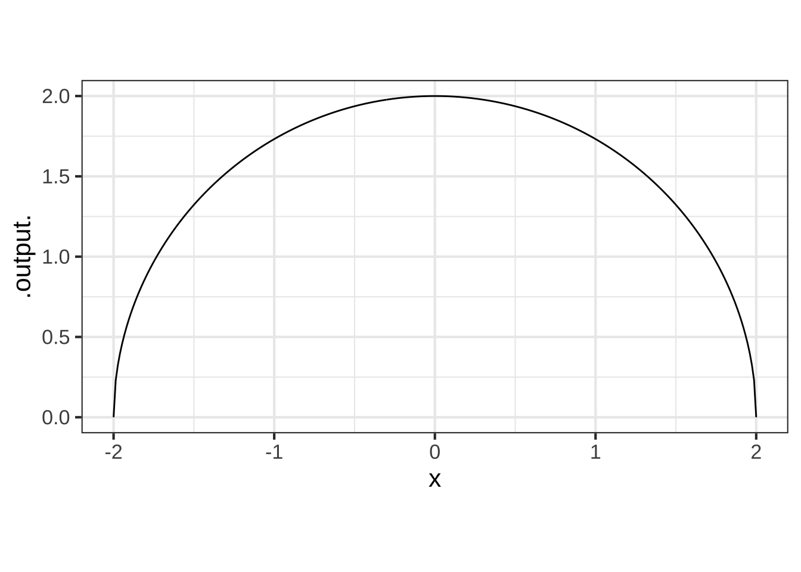
Intuition suggests that the radius of an enscribed circle for \(g()\) should match the radius of the graph of the function.
Using your R-console, create a function to calculate the curvature of \(g()\) at any input \(x\). Then plot that curvature function over the domain \(-2 < x < 2\). Is the curvature of \(g()\) indeed constant? To help you get started, here is some R/mosaic code with a fill-in-the-blank for the formula.
g <- makeFun(sqrt(R^2 - x^2) ~ x, R = 2) # define g()
dg <- D(g(x) ~ x) # first derivative of g()
ddg <- D(g(x) ~ x & x) # second derivative of g()
curvature <- makeFun(abs(ddg(x)) / abs(__fill_in_the_formula__)^(3/2) ~ x)
slice_plot(curvature(x) ~ x, bounds(x=-2:2))We set the default value of the parameter \(R\) to be 2.
**Part A** What is the curvature of $g(x)$? 0 0.5 1 1.5 2
Exercise 21.09
Here is a graph of \(\sin(x)\) with points marked at \(x=-\pi/2\), \(x=0.923\), and \(x = \pi/2\). At each of those points, an inscribed circle has been drawn, tangent to the function at that point.
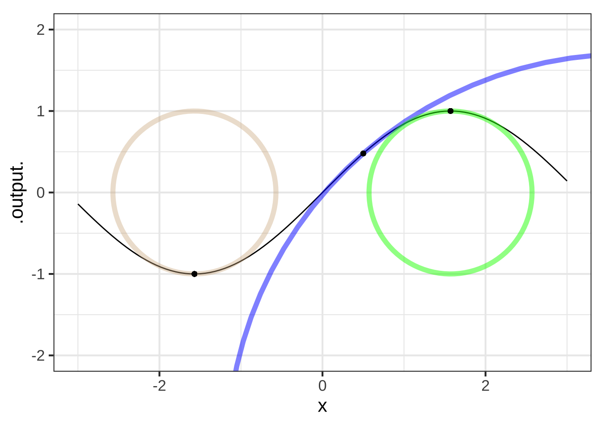
You’re task is to calculate the curvature \(\cal K\) at each of those three input points. This is a matter of calculating the first and second derivatives of the sine function, evaluating those derivatives at the input values, and plugging them in to the formula in Section 21.3.
**Part A** What is the curvature $\cal K$ of $\sin(x=-\pi/2)$? -1 0 0.5 1 2
**Part B** What is the curvature $\cal K$ of $\sin(x=-0.923)$? -1 0 0.5 1 2
**Part C** What is the curvature $\cal K$ of $\sin(x=\pi/2)$? -1 0 0.5 1 2
**Part D** What is the curvature $\cal K$ of $\sin(x=0)$? (Hint: You can tell straight from the graph, even though no enscribed circle has been drawn. 0 0.5 1 2
Exercise 21.10
The function road(x) has been constructed to correspond to a curved road of gradually tighter radius from left to right
R <- makeFun(3 - x/2 ~ x)
road <- makeFun(sqrt(R(x)^2 - x^2) ~ x)
slice_plot(road(x) ~ x, bounds(x=c(-2, 2)), npts=500)
Using your R console, calculate the curvature of this road for each value of \(x\).
**Part A** What is the curvature of the road at $x=-1$? 0.22 0.24 0.27 0.31 0.35
**Part B** What is the curvature of the road at $x=1$? 0.22 0.24 0.27 0.31 0.35
**Part C** What is the curvature of the road at $x=0$? 0.22 0.24 0.27 0.31 0.35
Exercise 21.11
## Warning in normalizePath("www/basketball-shot.png"):
## path[1]="www/basketball-shot.png": No such file or directory
The picture shows an instantaneous position of the ball. However, such a snapshot does not show the instantaneous velocity of the ball. If you had a few frames of a movie, your intuition would tell you if the ball is likely to go through the hoop. From a movie, you could even calculate a good finite-difference approximation to the instantaneous velocity of the ball.
In Block VI, you’ll see how to use the instantaneous position and velocity to trace out the trajectory of the ball up to the moment it comes into contact with the basket, hoop, or backboard.
Assume for the purposes of the following question that the boy, the center of the ball, and the center of the hoop are all in the same plane, as required for a swish shot. Assume as well that when the ball left the boy’s hands it was in the position now occupied by the boy’s head and that there was no spin on the ball. Now the question:
Will the ball swish through the basket?
Use calculus concepts to make a good argument about whether the answer should be “impossible” or “possible.”
Think of the path of the ball as a function \(f(x)\), where \(x\) is position along the floor and \(f(x)\) gives the corresponding height of the ball. Draw some intuitively plausible paths. That is, draw graphs of possible functions consistent with the picture and with the assumption that the launch point is marked by the current position of the boy’s head.
From the picture you can easily find the line connecting the ball’s current position with the launch point. The slope of this line is the average rate of change of ball height with respect to \(x\).
The physics of ball flight (with no spin) requires the function \(f(x)\) to be concave down. How does this restrict the set of possible paths?